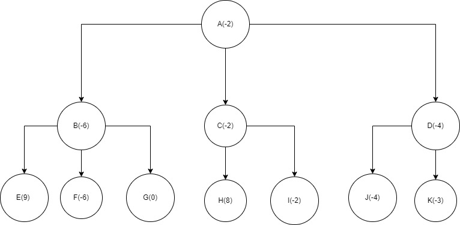
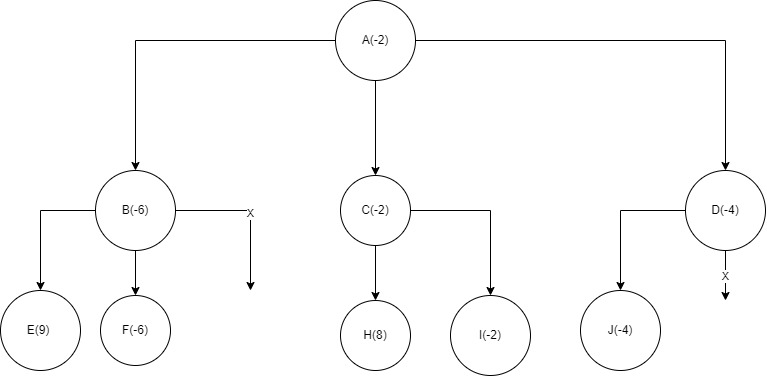

Game Playing
Game playing is one of the major fields that have been used by AI systems to improve. A Game is a fun program
that gives us a initial state, some pre conditions / rules and a goal state. The objective of an AI system is
to be able to play the game within those constraints and try to win.
A Game playing AI system must do the following things:
- Try to win
- Try to minimize the loss
It has always been a challenge for AI system to play general games (i.e have a system that can take the basic instruction of any game and play it effectively)
MinMax Algorithm
Many deterministic, Non-zero sum games where two players have to play against each other and try to win
has a catch that each player is alternatively playing hence one try to maximize its win while other minimize
the loss.
The algorithm that gives the min and max value possible for each state of the game is called MinMax Algorithm.
In this algorithm we build a game tree that represents the initial state as the root node and the child nodes
represents the next possible state of the game. Each alternative level of nodes represent either min or max value.
For example lets say we want to maximize our win hence we play at the maximize level while the opponent tries to minimize
his/her loss.
The advantage of using this algorithm is:
- The system can predict all possible moves hence for best case can win easily.
- Even for worst case where the system is lossing, it can predict the lowest loss.
It propagates the min or max value of each level back till the root node then uses a Static Evaluation FunctionA function that evaluates the current min or max point one can aquire and chooses its next move.
For example:
We have this game tree with max - min - max format
We do a 2 plyLevel of state search done and see that
the last level have 9, 8, -3 as max points but before that the middle level is opponents turn and
they choose the minimum value possible making -6, -2, -4 hence our best choice is to go with C
as our loss rate will be less than when we choose other path.

Alpha Beta cutoff/pruning Technique
The minmax algorithm is a useful algorithm for deterministic and multiplayer games but for games with
thousands of possible number of states in each step like chess, GO, etc developing the whole game tree
is resource intensive and makes the algorithm slow.
To optimize the minmax algorithm and try to make it faster for games with larger possible moves too, the
alpha beta cutoff or pruning Technique was developed.
The basic concept of this technique is to cutoff/prune/ignore some section or childs of the game tree that
doesnot yield any good points than already present. Hence in alpha beta cutoff technique the system doesnot
have to build the entire game tree but only those are usefull.
Advantages of using alpha beta cutoff:
- It optimizes the minmax algorithm
- It uses less space as some nodes doesnot have to be expanded
- It is much faster than minmax in most cases
For the same game tree as the minmax above this time we don't have to develope the whole
game tree.
- The Node G is not expanded as the minimum value possible is -6
- The Node K is not expanded as the minimum value possible -2 is already propagated to root node A
